摘要： 生成巴利语变音符号的方法有很多种。以下是对其中七个的评论。
不用字母表写作
巴利语是一种表音语言，没有自己的书面字母。因此，自第一世纪以来，学习该语言的学生就依靠自己的母语字母来阅读和书写巴利语。英石 公元前一世纪，斯里兰卡抄写员首次用僧伽罗字母记录了三藏。但当欧洲人在19世纪开始对南亚语言感兴趣时th 二十世纪，他们很快发现自己的罗马字母无法与南亚语言中存在的广泛音素（声音）相媲美。因此，欧洲学者开始通过用字母对和变音符号系统来增强罗马字母表来表示更有问题的巴利语音素，包括马克龙（横线）、上点、下点和波形符：
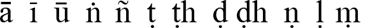
直到20世纪中期th 20 世纪，使用这些字符的巴利字体几乎全部由专业图书出版商使用。学者的日常抄写、翻译和编辑工作必须用打字机、钢笔和稳定的手来完成，以稳定地应用变音符号。不幸的是，第一台个人计算机未能解决变音符号的印刷挑战，因为它们是围绕非常有限的字符集（ASCII）设计的，只能勉强容纳大小写罗马字母、十个数字和少量的标点符号。紧随其后的扩展 ASCII 集提供了一套附加的特殊符号，其中包括北欧和东欧字母表所需的许多符号。但仍然没有长号或下划线。由于缺乏普遍接受的非 ASCII 字符的计算机表示方式，非欧洲语言的学生只能发明自己的权宜之计。这些范围从赋予普通标点符号双重作用作为变音符号的替代品，到设计特殊的变音符号字体（所有这些字体彼此不兼容），以及介于两者之间的一切。
评估方法
巴利语（实际上是任何语言）的良好书面语音表示，以母语字母为起点，应该追求以下每一个理想：
- 应该是 可读的 受到广大观众的喜爱。它应该引入最少的字母表中尚未存在的特殊字符。最好用一个小的变音符号修改现有的字母，而不是引入一个对于外行来说可能看起来像外星人的波浪线的全新字符。巴利语新手，看到 t 带有点下，应该能够立即猜出该字母代表 a 的某种变体 t 声音。
- 应该是 语音准确。书面文字应准确、准确地捕捉语音内容。每个音素（声音）应该由唯一的字母或字母组合明确表示。
- 应该是 易于打字。书写巴利语不应该成为键盘体操中的一项繁琐的练习。键入 一个-Macron 不应要求进行一长串击键（例如 Alt-Ctl-Shift-Esc-a）。
- 应该是 便携的。如果你递给我一本书——或者通过电子邮件给我发送一个文本文件——它在我看来应该和你看到的一模一样。我应该能够完全按照您的意图从语音上读出文本。
没有任何一种方法可以同时实现所有这些目标；没有一种方法是“最好的”，因此，您选择的方法既取决于您的特定需求（例如，您需要语音精度吗？您是在打印一本书还是匆忙写一封电子邮件？），也取决于您可以使用的打字、打印和计算资源（例如，您有巴利字体吗？您的文本编辑应用程序支持 Unicode 吗？）。
接下来，我列出了巴利语学生近几十年来使用的一些更常见的策略，从完全忽略变音符号到使用 Unicode 字体。我评估每种策略在实现上述目标方面的成功程度，以帮助您决定哪种方法最适合您的需求。
方法 1. 忽略变音符号
这当然是最简单的方法。但这种简单性的代价是沉重的：关键发音细节的不可挽回的损失。这是 Access to Insight 中经常使用的方法。 （我应该补充一点，我确实使用了腭鼻 ñ 因为使用 HTML 很容易实现，并且它包含在当今几乎每个人的计算机上都可以找到的扩展 ASCII 字符集中。）
| 示例： | 帕那帕塔·维拉玛尼·锡卡·帕达姆·萨玛迪亚米 [1]
（HTML：panatipata veramani sikkha-padam samadiyami） itihidam ayasmato kondaññassa、añña-kondañño'tveva namam、ahositi [2] |
|---|---|
| 可读性： | 出色的 |
| 语音学： | 贫穷的 |
| 易于使用： | 出色的 |
| 可移植性： | 出色的 |
| 全面的： | 公平的。它的语音不精确使得它在巴利语语法的实质性讨论中几乎毫无用处 |
| 用途： | 非正式信件、电子邮件。适用于不需要语言精确性的低预算印刷项目。 |
方法2.使用大写字母
大写字母表示带有变音符号的字母。该方法很简单，但有歧义：例如，您如何区分腭音和喉音 n （n 下有一个点，n 上有一个点）？
| 示例： |
帕纳蒂帕塔·维拉玛尼·锡克哈·帕达姆·萨玛迪亚米
（HTML：PANAtipATA VeramaNI sikkhA-padaM samAdiyAmi） itihidaM Ayasmato kondaññassa、añña-kondañño'tveva namam、ahositi
|
|---|---|
| 可读性： | 贫穷的。不断变化的案件令人不安。当大写字母出现在单词末尾时，看起来就像镜像书写。 |
| 语音学： | 公平的。腭部 n 和喉音 n 是无法区分的。 |
| 易于使用： | 好的。可能需要一些时间来适应 Shift 键的新含义。 |
| 可移植性： | 出色的 |
| 全面的： | 公平的。随机点上帽子的狂躁外观令人难以忍受。 |
| 用途： | 非正式信件、电子邮件。不适合打印。 |
方法 3. Velthuis 方案：双元音，标点辅音
在 维尔图斯方案 遵守两个基本规则：
- 长元音（通常在其上方排版有长音（横杠））是双音： aa ii uu
- 对于辅音，变音符号位于其影响的字母之前。因此，卷舌（大脑）辅音（通常排版时下方有一个点）是： .t .th .d .dh .n .l。纯鼻音 (niggahiita) m，也是在下面带有点的排版，是 .米。喉鼻（n 上面有一个点）表示为 “n. 腭鼻部 （n 带波浪号）是 〜n。
在纯 ASCII 方法中，这种方法是最精确的，因为它仔细地保留了每个特殊字符的重要性。然而，对于外行来说，所有这些双元音和错位的句号完全令人困惑，也许会让他们怀疑是否有人的键盘坏了。
| 示例： |
paa.naatipaataa verama.nii sikkhaa-pada.m samaadiyaami
（HTML：paa.naatipaataa verama.nii sikkhaa-pada.m samaadiyaami） itihida.m aayasmato ko.n.daññassa、añña-ko.n.dañño'tveva naama.m、ahosiiti
|
|---|---|
| 可读性： | 公平的。文字看起来充满了拼写错误。 |
| 语音学： | 出色的。 |
| 易于使用： | 好的。需要学习句号和双引号键的双重意义。 |
| 可移植性： | 出色的 |
| 全面的： | 好的。 |
| 用途： | 正式学术信函、电子邮件。不适合印刷（需要学术精确性的低预算短期项目除外）。 |
方法 4. 使用一点 HTML
HTML 可以访问扩展的 ASCII 字符集，其中包括许多带重音的非英语欧洲元音（元音变音、扬抑符等），其中一些可以作为长巴利元音的合理替代（ä ï ü; à ì ù;或者 â î û ETC。）。腭部 n 很简单： ñ. 无论您采用哪种口音，都要始终如一地使用它。
| 示例： |
pâ.nâtipâtâ verama.nî sikkhâ-pada.m samâdiyâmi
（HTML：pâ.nâtipâtâ verama.nî sikkhâ-pada.m samâdiyâmi） itihidam âyasmato kondaññassa、añña-kondañño'tveva nâmam、ahosîti
|
|---|---|
| 可读性： | 非常好。 |
| 语音学： | 公平的。辅音变音符号缺失。 |
| 易于使用： | 好的。使用大多数 HTML 创作工具即可轻松制作。 |
| 可移植性： | 好的。仅限于网络浏览器和其他支持 HTML 的软件。 |
| 全面的： | 还不错。改进了 大写字母法，但不捕获辅音变音符号。 |
| 用途： | 非正式信件、电子邮件、打印。 |
方法 5. 混合 Velthuis/HTML
该方法试图消除口吃 方法三的双元音，通过使用一点 HTML (方法4).
| 示例： |
pâ.nâtipâtâ verama.nî sikkhâ-pada.m samâdiyâmi
（HTML：pâ.nâtipâtâ verama.nî sikkhâ-pada.m samâdiyâmi） itihida.m âyasmato ko.n.daññassa、añña-ko.n.dañño'tveva nâma.m、ahosîti
|
|---|---|
| 可读性： | 公平的。看起来它有拼写错误，尽管可能没有纯 Velthuis 那么多。 |
| 语音学： | 出色的。 |
| 易于使用： | 公平的。比 Velthuis 更复杂，因为它需要特殊标点符号的组合 和 使用特殊的 HTML 字符。 |
| 可移植性： | 好的。仅限于网络浏览器和其他支持 HTML 的软件。 |
| 全面的： | 公平的。尽管这种混合确实稍微改善了 Velthuis 的外观，但它看起来仍然像是一个充满错误的混乱。 |
| 用途： | 非正式的信件（要求精确的学者必然更喜欢古老的纯Velthuis）。通常不适合电子邮件或打印。 |
方法6.特殊巴利字体
对于高质量的印刷项目，没有什么比精心设计的巴利字体更好的了。有关可用巴利文和梵文字体的详细审查，请参阅 梵文的音译和梵文字体，乌尔里希·斯蒂尔着。内观禅修协会 巴利字体资源页面 提供多种适合使用巴利文的 ANSI 和 Unicode 字体。
| 示例（“Normyn”字体）： | 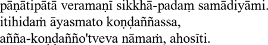 |
|---|---|
| 可读性： | 出色的。 |
| 语音学： | 出色的。 |
| 易于使用： | 变量 - 它取决于特定字体使用的键盘映射。 |
| 可移植性： | 贫穷的。这些字体并不都共享相同的编码标准；它们不可互换。如果我向您发送一个使用 X 字体格式化的文本文档，而您使用 Y 字体显示它，则巴利文字符可能无法正确显示。 |
| 全面的： | 非常好 - 但仅适用于以打印（硬拷贝）形式或作为 PDF 文件或 GIF 图像共享的文档。 |
| 用途： | 印刷。不适合电子邮件或网络，除非嵌入 PDF 文件或 GIF 图像中。 |
方法 7.Unicode 和 Unicode 字体
统一码 近年来已成为表示世界上大多数字母表中的字符的国际标准。巴利语音译所需的所有特殊字符都可以在 Unicode 中找到 拉丁语扩展-A， 和 拉丁语扩展附加 代码图表。因此，只要您的 Web 浏览器使用支持 Unicode 的字体，就可以使用 HTML 轻松生成它们。
有许多可用的 Unicode 字体包含巴利语所需的字符。
下表列出了生成每个特殊巴利语字符所需的 HTML Unicode 实体。如果您的 Web 浏览器支持 Unicode，则表格最后一列中显示的字符应类似于阴影列中显示的字符。如果它们不匹配，则您可能需要升级 Web 浏览器、在计算机上安装 Unicode 字体，或同时执行这两种操作。有关配置计算机和浏览器以使用 Unicode 的详细信息，请参阅 统一码网站.
| 巴利文字母 | 维尔图斯 | 超文本标记语言 | 在浏览器上呈现为 [3] | |
|---|---|---|---|---|
| 马克龙 | 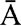 |
AA | Ā | Ā |
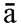 |
啊 | ā | ā | |
| 我马克龙 | 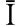 |
二 | Ī | Ī |
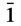 |
二、 | ī | ī | |
| 马克龙 | 尿素 | Ū | Ū | |
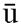 |
呃 | ū | ū | |
| N 点覆盖 | “N | Ṅ | Ṅ | |
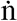 |
“n | ṅ | ṅ | |
| M 点下 | 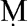 |
.M | Ṃ | Ṃ |
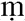 |
.米 | ṃ | ṃ | |
| N 波形符 | ～N | Ñ | Ñ | |
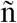 |
～n | ñ | ñ | |
| T 下点 | 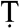 |
.T | Ṭ | Ṭ |
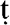 |
.t | ṭ | ṭ | |
| D 点下 | 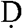 |
.D | Ḍ | Ḍ |
| .d | ḍ | ḍ | ||
| N 点下 | 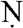 |
.N | Ṇ | Ṇ |
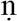 |
.n | ṇ | ṇ | |
| L 点下 | .L | Ḷ | Ḷ | |
| .l | ḷ | ḷ | ||
| 示例： | 帕纳提帕塔维拉玛尼 sikkhā-padam samādiyāmi itihidam ayasmato Koṇḍaññassa、añña-koṇḍañño'tveva nāmaṁ、ahosīti |
|---|---|
| 可读性： | 出色的 |
| 语音学： | 出色的 |
| 易于使用： | 差-好，取决于您使用的特定软件（HTML 创作程序、文字处理器、电子邮件客户端等）。 |
| 可移植性： | 好-优秀。需要至少安装一组基本的 Unicode 字体。 |
| 全面的： | 好的。在某些软件应用程序中使用起来仍然有点麻烦，这个缺点可能会在未来几年内消失。 |
| 用途： | 网络、电子邮件（如果电子邮件客户端允许轻松输入巴利语字符）、打印（使用精心设计的 Unicode 字体）。 |